Now that we are moving in two-dimensions, we need to deal with how we treat direction. We know that most quantities need direction, like velocity and acceleration.
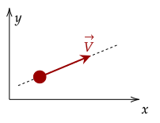
For this one-dimensional case, a simple flip of the signs works. For free falling objects, we almost always set "going up" as positive velocity and "going down" as negative velocity.
These quantities that need direction are called

The figure above shows a person running around in a circle. We can see that their velocity is changing direction, and thus changes. However, the
Question 1
(HRK Q2.6) Can the speed of a particle ever be negative? If so, give an example; if not, explain why.Answer
In two dimensions, we can't rely on changing signs. For example, in one-dimension, we can add vectors by just adding their magnitudes up. The vector we get from adding these up is called the
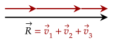
To add two-dimensional vectors however, we have to do a different way. Visually, we just add them up tip-to-tail.
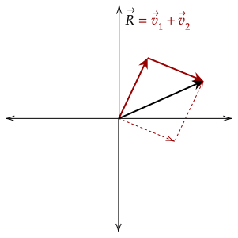
To add them numerically, we first need to break down the vectors. A vector can be broken down into its
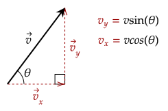
One must recall their trigonometry to deal with this; especially the
We can also use these components to get the magnitude and the angle of the vector via the pythagorean theorem and using the
Exercise 1
(HRK E2.4a) What are the components of a vector in the xy plane if its direction is 252° counterclockwise from the positive x axis and its magnitude is 7.34 units?Solution
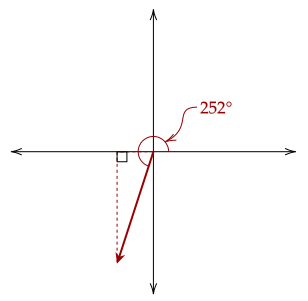
The reference angle of 252° is 72°, we take the sine and cosine of that angle to get the magnitudes of the two components.
This gives us the two component vectors.
Exercise 2
(HRK E2.3a) Vector has a magnitude of 5.2 units and is directed east. Vector has a magnitude of 4.3 units and is directed 35° west of north. Find .Solution
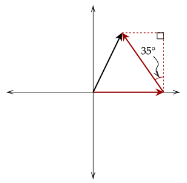
We take the sine and cosine of the angle to get the two components of the angled vector.
To get the magnitude, we use the pythagorean theorem.
For the angle measure, we use the arctan() function.
Thus, we get that is a vector with magnitude 4.5 units and direction 52° counterclockwise from the +x axis.
One way to represent a vector is by using
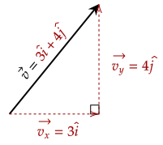
Exercise 3
(LSM P4.18) The position of a particle changes from to . What is the particle’s displacement?Solution
We first parse what the two vectors mean. The first vector has a length of 2 going to the right and a height of 3 going up, while the other vector has a length of 4 going to the left (hence the negative sign) and a height of 3 going up also.
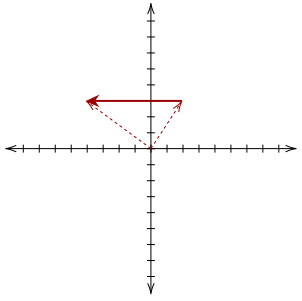
We got these values by looking at the unit vectors they are composed out of.
To do this formally, we use the distance formula, which is powered by the pythagorean theorem.
One may notice that this shows that the x-component and y-component of a vector is separate; and thus we can separate motion in two dimensions to two cases of one-dimensional motion, which we've studied.
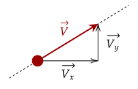
We can now deal with some problems about motion in two dimensions, where we just have to break down the vectors into its components and work at it from there.
Be warned; this may seem like a large jump in complexity as there looks to be a lot of information, however just remember one thing: two-dimensional motion is two cases of one-dimensional motion.
Problem 1
(LSM P4.28) A boat heads out into a lake with an acceleration of m/s². A strong wind is pushing the boat, giving it an additional velocity of m/s.(a) What is the velocity of the boat at t = 10s?
(b) What is the position of the boat at t = 10s?
Solution
The acceleration appears to only move in the x-axis, so the velocity's y-component will not be affected. We can calculate the velocity by just using our kinematic equations. To make it less confusing, let's add a subscript of and to determine what dimension we are using.
This gives us that the velocity at 10s is m/s; at one significant figure, it is m/s. For position, we have to separate it first into the x-component and y-component. For the x-component, we have an initial velocity, acceleration, and time, so we use our third equation.
The y-component is much easier, as there is no acceleration to worry about. We use the first equation instead, as the velocity is constant.
This gives us that the position at 10s is at m.
Problem 2
(LSM P4.30) The acceleration of a particle is a constant. At t = 0s, the velocity of the particle is m/s. At t = 4s, the velocity is m/s. What is the particle’s acceleration?Solution
The x-component of velocity has gone from 10m/s to 0m/s in four seconds. We can plug this into our second kinematic equation.
Similarly, the y-component of velocity has gone from 20m/s to 10m/s in four seconds. Plugging this in gives us the y-component of the acceleration.
We thus get that the acceleration vector is given by m/s². Rounding it to one significant figure gives us m/s².
Problem 3
(LSM P4.27a) A particle’s acceleration is m/s². At t = 0, its position and velocity are zero. What are the particle’s position and velocity as functions of time?Solution
We must use calculus to get the velocity and position functions. Since the initial velocity and position is zero, we may drop the arbitrary constant.
Starting with the x-component, we first get the velocity then position function.
We follow a similar way for the vertical component.
This gives us the velocity function is m/s, while the position function is m/s.
This approach of vector addition also helps us deal with relative motion, a topic we dealt with in the last tutorial. This time, however, we deal with it in two dimensions, which still offers the same tricks we used.
The same approach works for motion in two dimensions. However, of course, now we have to deal with composition and decomposition. Eitherway, the same strategy still works.
Exercise 4
(LSM P4.76a) A small plane flies at 200 km/h in still air. If the wind blows directly out of the west at 50 km/h, in what direction must the pilot head her plane to move directly north across land?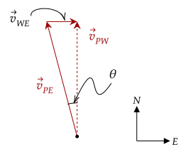
Solution
Here, we have two dimensions; north and west. We know the speed of the wind with respect to earth, and the speed of the plane with respect to earth. We need the speed of the plane with respect to the wind.
Since they are in perpendicular directions, we can't add them up like we did before. Now, we have to use the pythagorean theorem and trigonometry. However, since the question needs only the direction, we don't need to calculate the magnitude.
We use an inverse trigonometric function to get the angle.
Thus, the direction she needs to head is 14.48 degrees west from north.
The figure above was created by me. In reality, it may not be as clear cut on what is the hypotenuse or legs. We must read the problem carefully.
Exercise 5a
(LSM P4.77a) A cyclist traveling southeast along a road at 15 km/h feels a wind blowing from the southwest at 25 km/h. To a stationary observer, what is the speed of the wind?Solution
The velocity of the cyclist with respect to Earth is given, and the velocity of the wind with respect to the cyclist is given. We can then draw the following diagram.
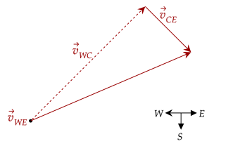
Here, we set the hypotenuse as the actual direction of the wind. This is because the direction of the wind being "southwest" is relative to the cyclist moving southeast.
The speed is simply using the pythagorean theorem.
Exercise 5b
(LSM P4.77b) Find the direction of the wind above relative to the stationary observer.Solution
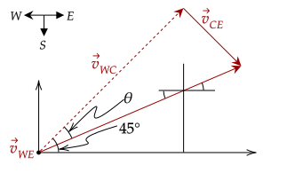
Despite what the figure looks like, it isn't that complicated. First, we need to get the angle θ. This uses an inverse trigonometric function.
Subtracting this angle from 45° gives us the actual angle 14°. The wind is 14° north from east.